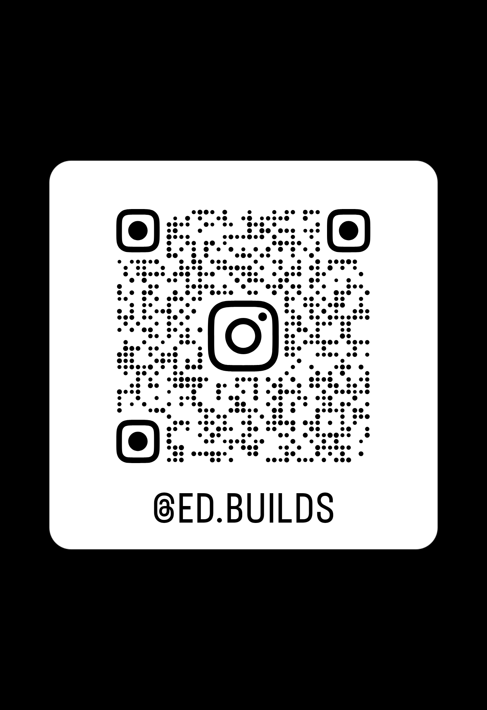

Flujo práctico
Un proceso simple para trabajar con agentes de IA.
Workshop Deck
Taller de 1 hora · Startups en incubación
Un método práctico para pasar de notas desordenadas a un deck claro, creíble y útil.
Resultado esperado
Un proceso simple para trabajar con agentes de IA.
Una base real de 10–12 diapositivas.
Un filtro para detectar vaguedad y exageración.
Una secuencia que podrán usar después del taller.
Idea central
La IA ayuda a estructurar, sintetizar, criticar y reescribir. La verdad del negocio sigue siendo responsabilidad del equipo fundador.
Qué debe resolver un deck
¿Qué problema existe?
¿Para quién?
¿Por qué ahora?
¿Qué evidencia hay?
¿Por qué este equipo?
¿Qué necesitan?
Mapa del deck
Roles de agentes
Extrae hechos, supuestos y vacíos.
Propone maneras de contar la historia.
Presiona donde el deck es débil.
Reescribe para mayor claridad y precisión.
Insumos mínimos
Flujo de trabajo
Contexto
Hechos y vacíos
Narrativas
Outline
Crítica
Reescritura
Copy
Demo en vivo
Caso de ejemplo
Startup ejemplo
Pequeñas empresas urbanas de logística.
Despacho coordinado con WhatsApp, llamadas y Excel.
SaaS por vehículos activos.
Retención y disposición a pagar aún abiertas.
Qué revisar en la salida
¿Hay evidencia detrás de cada afirmación?
¿Hay lenguaje demasiado genérico?
¿La IA exageró certeza?
¿La lógica general del deck se sostiene?
Errores típicos
“Las empresas necesitan digitalizarse”.
Mucho adjetivo, poca sustancia.
Actividad presentada como prueba.
Ignora alternativas reales.
Muy grande, poco útil para empezar.
CV fuerte, founder-market fit débil.
Regla simple
Qué estás diciendo.
Por qué deberían creerte.
Por qué eso importa para el negocio.
Ejemplo aplicado
El objetivo es evitar frases bonitas sin sustento.
El despacho es caótico para operadores pequeños.
Hoy combinan WhatsApp, llamadas y Excel todos los días.
Hay espacio para una herramienta más simple y enfocada.
Actividad
Un primer outline y una lista clara de vacíos o pruebas faltantes.
Debrief
¿Qué salió claro?
¿Qué quedó débil?
¿Qué exageró la IA?
¿Qué evidencia falta?
Después del taller
La IA acelera.
La claridad convence.
La evidencia sostiene.
Contacto
Co-Founder of Codetitlan and 3erEspacio · AI expert
Ingeniero de software con más de 20 años de experiencia trabajando con firmas internacionales, enfocado en producto, tecnología e inteligencia artificial.
